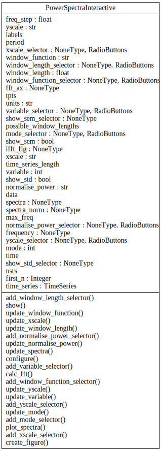

Power-Spectra Interactive¶
{kind=link}

An interactive power spectra plot generated from a TVB TimeSeries datatype.
Usage
#Load the demo data
import numpy
data = numpy.load("demos/demo_data_region_16s_2048Hz.npy")
period = 0.00048828125 #NOTE: Providing period in seconds
#Create a tvb TimeSeries object
import tvb.datatypes.time_series
tsr = tvb.datatypes.time_series.TimeSeriesRegion()
tsr.data = data
tsr.sample_period = period
#Create and launch the interactive visualiser
import tvb.simulator.power_spectra_interactive as ps_int
psi = ps_int.PowerSpectraInteractive(time_series=tsr)
psi.show()
- tvb.simulator.plot.power_spectra_interactive.PowerSpectraInteractive[source]¶
The graphical interface for visualising the power-spectra (FFT) of a timeseries provide controls for setting:
- which state-variable and mode to display [sets]
- log or linear scaling for the power or frequency axis [binary]
- sementation lenth [set]
- windowing function [set]
- power normalisation [binary] (emphasise relative frequency contribution)
- show std or sem [binary]
traits on this class:
- first_n (Display the first ‘n’)
- Primarily intended for displaying the first N components of a surface PCA timeseries. Defaults to -1, meaning it’ll display all of ‘space’ (ie, regions or vertices or channels). In other words, for Region or M/EEG timeseries you can ignore this, but, for a surface timeseries it really must be set.default: -1
- time_series (Timeseries)
- The timeseries to which the FFT is to be applied.default: None